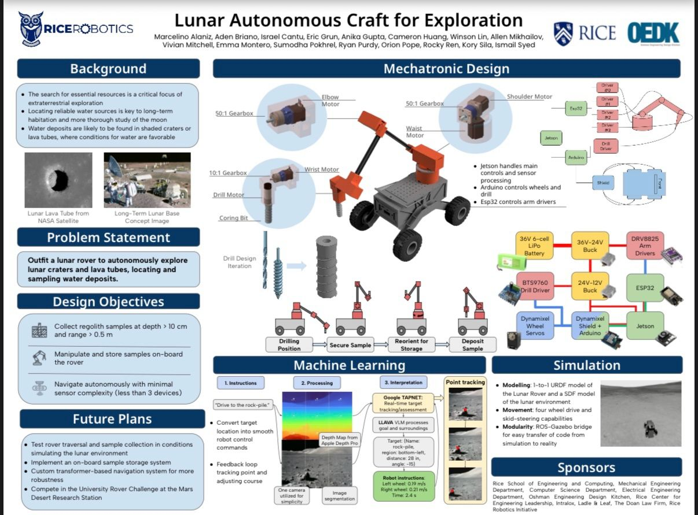
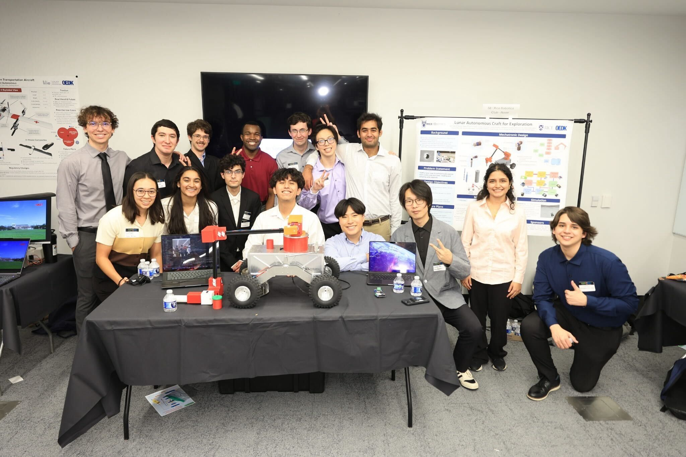
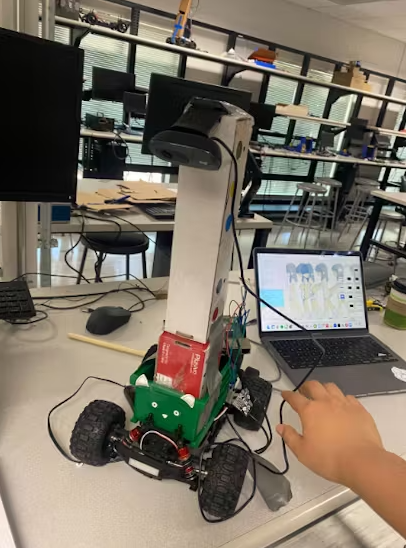

Lunar Rover (Rice Robotics Rover ELEC Team Lead)
Fall 2024 – Present


Led a team of 10 to design and build a lunar rover for the University Rover Competition, focusing on robust power systems, precise navigation, and team coordination.
- Coordinated weekly meetings, facilitated development, and managed troubleshooting for system issues.
- Created a 36V/5A power-distribution system ensuring stable delivery to motors, drivers, and LIDAR.
- Developed C/C++ navigation protocols for Arduino and ESP32 for efficient, accurate movement.
Autonomous Lane-Keeping RC Car
Spring 2025 – Jun 2025

Built a real-time autonomous RC car using computer vision and embedded Linux to achieve precise lane-following and robust road detection.
- Developed C-based driver for Raspberry Pi 5, enhancing system responsiveness.
- Implemented OpenCV-based lane-keeping to accurately identify and track road markings.
- Integrated custom Linux kernel modules for reliable hardware-software interfacing.
Watch the Meow Mobile in Action
Speed Gun using MSPS003F3
Spring 2025 – Jun 2025
Engineered a device to measure speed using a microcontroller and an ultrasonic sensor, achieving high-precision velocity readings in a custom hardware setup.
- Designed and fabricated a custom PCB to integrate sensors, buzzers, and LEDs within a 3D enclosure.
- Implemented interrupt-driven embedded C code for real-time speed and distance calculations.
- Optimized power efficiency with a state machine and low-power microcontroller operation.